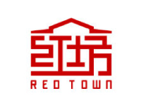
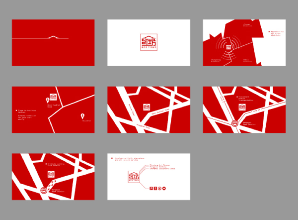
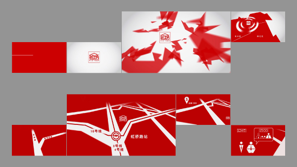
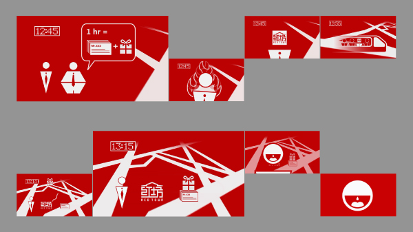

RED TOWN 红坊

Basic Info
Type: Video / Infographic
Tool: AI / PS / AE / AU
Team member: 2
Work in charge: Visual Style / Production / Audio
Requirement & Purpose
Introduce the main characteristics of the RED TOWN creativity
industrial park in Shanghai: wide influence, convenient transportation and fast design service.
The video was aimed at the potential merchants which would like to enter the park and the customers who need fast design service.
The video was to be played in the main hall of the park and can be partly used in the TVC and way-finding

The storyboard of the video
 
Keyframes of the video